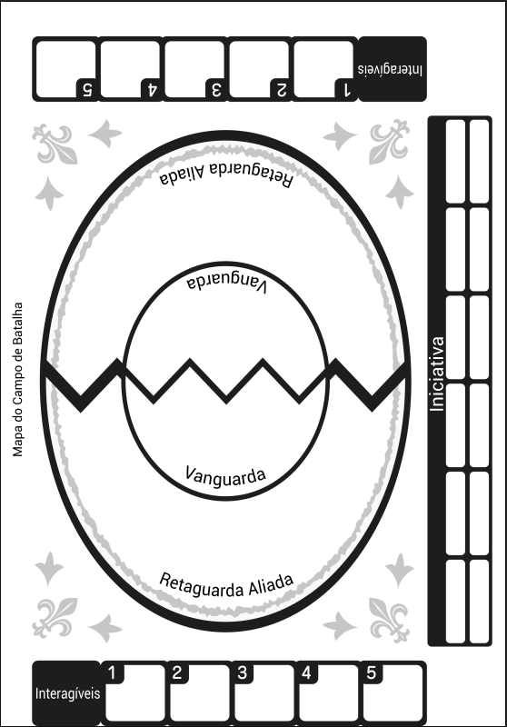
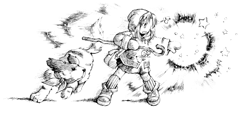

Personagens: Viajantes

Os jogadores criam "Viajantes" escolhendo uma das 7 Classes (como Caçador, Mercador, Curandeiro, Menestrel, etc.) e um dos 3 Tipos (Atacante, Técnico ou Mágico), que definem suas habilidades e foco inicial.
Esta é apenas uma visão geral e simplificada. Para as regras completas e detalhadas, consulte o livro oficial de Ryuutama!
Ryuutama utiliza dados de 4, 6, 8, 10 e 12 faces (d4 a d12). Os quatro Atributos principais (Força [FOR], Destreza [DES], Inteligência [INT], Espírito [ESP]) determinam o tipo de dado usado nos testes (ex: FOR 6 usa d6).
A maioria dos testes envolve rolar dois dados de Atributo e somar os resultados, buscando alcançar ou superar um Número Alvo (NA). Rolar 1 em ambos os dados é uma Falha Crítica (que gera Pontos de Falha para o grupo), enquanto obter o valor máximo nos dois dados (ou dois 6s) é um Sucesso Crítico.
A viagem é um elemento central, e cada dia fora de um assentamento seguro envolve Testes de Jornada para determinar o progresso e os desafios:
A dificuldade (NA) destes testes é baseada no nível do Terreno e nos modificadores de Clima.
O combate em Ryuutama existe, mas muitas vezes é mais rápido e menos tático que em outros RPGs.
Ele usa um sistema de Iniciativa ([DES+INT]) que também serve como defesa base. O campo de batalha abstrato é dividido em áreas (Vanguarda e Retaguarda).
As ações comuns incluem Atacar, Usar Magia, Defender, Mover-se e usar Interagíveis do cenário.

Os jogadores criam "Viajantes" escolhendo uma das 7 Classes (como Caçador, Mercador, Curandeiro, Menestrel, etc.) e um dos 3 Tipos (Atacante, Técnico ou Mágico), que definem suas habilidades e foco inicial.

Personagens do Tipo Mágico podem usar Magia Sazonal (Primavera, Verão, Outono, Inverno), ligada à sua afinidade pessoal e aprendida naturalmente, e/ou Magia Arcana, aprendida através de estudo e registrada em grimórios.
Isso é apenas o começo! O livro de Ryuutama está repleto de regras detalhadas, listas completas de Talentos, Magias, Equipamentos, Monstros incríveis, e todas as ferramentas que Mestres e Jogadores precisam para criar suas próprias jornadas inesquecíveis.
Adquira o Livro para as Regras Completas!